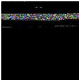
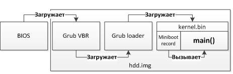
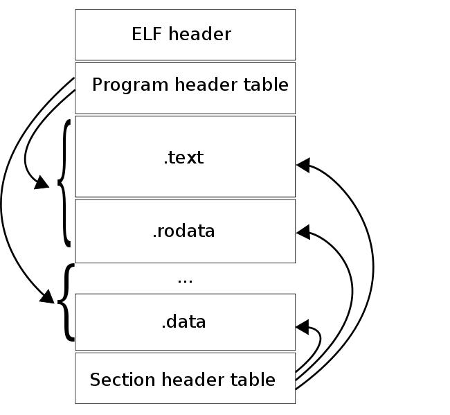
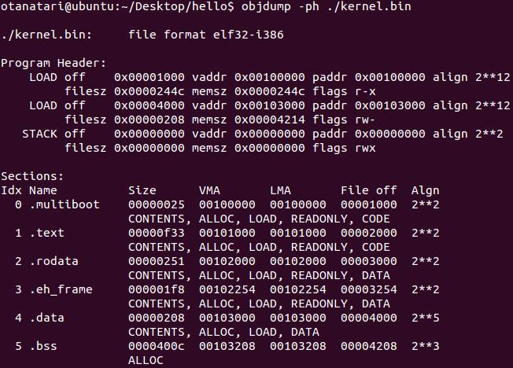
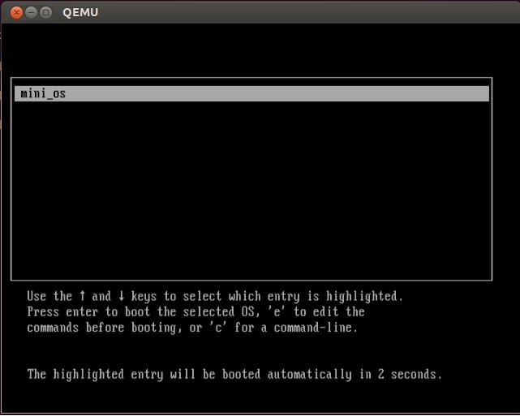
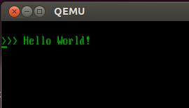

В интернете существует огромное количество описаний и туториалов о том как написать собственную мини-ОС, даже существуют сотни готовых маленьких хобби-ОС.
Но если цель научится делать такие штуки и потом например работать в этом направлении, то по моему мнению не так-уж и много актуальных материалов.
Хочу перепостить цикл статей, по которым я в своё время учился.
Как-то многие забыли про эти статьи, а они до сех-пор актуальны, ну как минимум для учебы.)
Итак, цель: затратив как можно меньше усилий, создать собственную загрузочную флешку, которая всего-навсего печатает на экране компьютера классический “Hello World”.
Если быть более точным, то нам нужно “попасть” в защищенный режим с отключенной страничной адресацией и прерываниями – самый простой режим работы процессора с привычным поведением для простой консольной программы. Самый разумный способ достичь такой цели – собрать ядро поддерживающее формат multiboot и загрузить его с помощью популярного загрузчика Grub. Альтернативой такого решения является написание собственного volume boot record (VBR), который бы загружал написанный собственный загрузчик (loader). Приличный загрузчик, как минимум, должен уметь работать с диском, с файловой системой, и разбирать elf образы. Это означает необходимость написания множества ассемблерного кода, и немало кода на С.
Одним словом, проще использовать Grub, который уже умеет делать все необходимое.
Начнем с того, что для дальнейших действий необходим определенный набор компиляторов и утилит. Проще всего воспользоваться каким-нибудь Linux (например, Ubuntu), поскольку он уже будет содержать все что нужно для создания загрузочной флэшки.
Если вы привыкли работать в Windows, то можно настроить виртуальную машину с Linux (при помощи Virtual Box или VMware Workstation).
Если вы используете Linux Ubuntu, то прежде всего необходимо установить несколько утилит:
1. Grub. Для этого воспользуемся командой:
Код:
apt-get install grub2. Qemu. Он нужен, чтобы все быстро протестировать и отладить, для этого аналогично команда:
Код:
apt-get install qemuТеперь наш план выглядит так:
1. создать программу на C, печатающую строку на экране.
2. собрать из нее образ (kernel.bin) в формате miniboot, чтобы он был доступен для загрузки с помощью GRUB.
3. создать файл образа загрузочного диска и отформатировать его.
4. установить на этот образ Grub.
5. скопировать на диск созданную программу (kernel.bin).
6. записать образ на физический носитель или запустить его в qemu.
А процесс загрузки системы:

Чтобы все получилось, необходимо будет создать несколько файлов и каталогов:
| kernel.c | Код программы, написанный на языке С. Программа печатает на экран сообщение. |
| makefile | Makefile, скрипт, выполняющий всю сборку программы и создание загрузочного образа. |
| linker.ld | Скрипт компановщика для ядра. |
| loader.s | Код на ассемблере, который вызывается Grub’ом и передает управление функции main из программы на С. |
| include/ | Папка с заголовочными файлами. |
| grub/ | Папка с файлами Grub’а. |
| common/ | Папка с функциями общего назначения. В том числе реализация printf. |
Шаг 1. Создание кода целевой программы (ядра):
Создаем файл kernel.c, который будет содержать следующий код, печатающий сообщение на экране:
C:
#include "printf.h"
#include "screen.h"
#include "types.h"
void main(void)
{
clear_screen();
printf("\n>>> Hello World!\n");
}Тут все привычно и просто. Добавление функций printf и clear_screen будет рассмотрено дальше. А пока надо дополнить этот код всем необходимым, чтобы он мог загружаться Grub’ом.
Для того что бы ядро было в формате multiboot, нужно что бы в первых 8-ми килобайтах образа ядра находилась следующая структура:
| 0x1BADB002 = MAGIC | Сигнатура формата Multiboot |
| 0x0 = FLAGS | Флаги, которые содержат дополнительные требования к загрузке ядра и параметрам, передаваемым загрузчиком ядру (нашей программе). В данном случае все флаги сброшены. |
| 0xE4524FFE= -(MAGIC + FLAGS) | Контрольная сумма. |
Если все указанные условия выполнены, то Grub через регистры %eax и %ebx передает указатель на структуру multiboot Information и значение 0x1BADB002 соответственно.
Структура multiboot Information содержит различную информацию, в том числе список загруженных модулей и их расположение, что может понадобиться для дальнейшей загрузки системы.
Для того, чтобы файл с программой содержал необходимые сигнатуры создадим файл loader.s, со следующим содержимым:
Код:
.text
.global loader # making entry point visible to linker
# setting up the Multiboot header - see GRUB docs for details
.set FLAGS, 0x0 # this is the Multiboot 'flag' field
.set MAGIC, 0x1BADB002 # 'magic number' lets bootloader find the header
.set CHECKSUM, -(MAGIC + FLAGS) # checksum required
.align 4
.long MAGIC
.long FLAGS
.long CHECKSUM
# reserve initial kernel stack space
.set STACKSIZE, 0x4000 # that is, 16k.
.lcomm stack, STACKSIZE # reserve 16k stack
.comm mbd, 4 # we will use this in kmain
.comm magic, 4 # we will use this in kmain
loader:
movl $(stack + STACKSIZE), %esp # set up the stack
movl %eax, magic # Multiboot magic number
movl %ebx, mbd # Multiboot data structure
call main # call C code
cli
hang:
hlt # halt machine should kernel return
jmp hangРассмотрим код подробнее. Этот код в почти не измененном виде взят с wiki.osdev.org/Bare_Bones. Так как для компиляции используется gcc, то используется синтаксис GAS. Рассмотрим подробнее, что делает этот код.
Код:
.textВесь последующий код попадет в исполняемую секцию .text.
Код:
.global loaderОбъявляем символ loader видимым для линковщика. Это требуется, так как линковщик будет использовать loader как точку входа.
Код:
set FLAGS, 0x0 # присвоить FLAGS = 0x0
.set MAGIC, 0x1BADB002 # присвоить MAGIC = 0x1BADB002
.set CHECKSUM, -(MAGIC + FLAGS) # присвоить CHECKSUM = -(MAGIC + FLAGS)
.align 4 # выровнять последующие данные по 4 байта
.long MAGIC # разместить по текущему адресу значение MAGIC
.long FLAGS # разместить по текущему адресу значение FLAGS
.long CHECKSUM # разместить по текущему адресу значение CHECKSUMЭтот код формирует сигнатуру формата Multiboot. Директива .set устанавливает значение символа в выражение справа от запятой. Директива .align 4 выравнивает последующее содержимое по 4 байта. Директива .long сохраняет значение в четырех последующих байтах.
Код:
.set STACKSIZE, 0x4000 # присвоить STACKSIZE = 0x4000
.lcomm stack, STACKSIZE # зарезервировать STACKSIZE байт. stack ссылается на диапазон
.comm mbd, 4 # зарезервировать 4 байта под переменную mdb в области COMMON
.comm magic, 4 # зарезервировать 4 байта под переменную magic в области COMMONВ процессе загрузки grub не настраивает стек, и первое что должно сделать ядро это настроить стек, для этого мы резервируем 0x4000(16Кб) байт. Директива .lcomm резервирует в секции .bss количество байт, указанное после запятой. Имя stack будет видимо только в компилируемом файле. Директива .comm делает то же что и .lcomm, но имя символа будет объявлено глобально. Это значит что, написав в коде на Си следующую строчку, мы сможем его использовать.
extern int magic
И теперь последняя часть:
Код:
loader:
movl $(stack + STACKSIZE), %esp # инициализировать стек
movl %eax, magic # записать %eax по адресу magic
movl %ebx, mbd # записать %ebx по адресу mbd
call main # вызвать функцию main
cli # отключить прерывания от оборудования
hang:
hlt # остановить процессор пока не возникнет прерывание
jmp hang # прыгнуть на метку hangПервой инструкцией происходит сохранение значения верхушки стека в регистре %esp. Так как стек растет вниз, то в %esp записывается адрес конца диапазона отведенного под стек. Две последующие инструкции сохраняют в ранее зарезервированных диапазонах по 4 байта значения, которые Grub передает в регистрах %eax, %ebx. Затем происходит вызов функции main, которая уже написана на Си. В случае возврата из этой процедуры процессор зациклится.
Шаг 2. Подготовка дополнительного кода для программы (системная библиотека):
Поскольку вся программа пишется с нуля, то функцию printf нужно написать с нуля. Для этого нужно подготовить несколько файлов.
Создадим папку common и include:
Код:
mkdir common
mkdir includeСоздадим файл common\printf.c, который будет содержать реализацию привычной функции printf. Этот файл целиком можно взять из проекта www.bitvisor.org. Путь до файла в исходниках bitvisor: core/printf.c. В скопированном из bitvisor файле printf.c, для использования в целевой программе нужно заменить строки:
Код:
#include "initfunc.h"
#include "printf.h"
#include "putchar.h"
#include "spinlock.h"на строки:
Код:
#include "types.h"
#include "stdarg.h"
#include "screen.h"Потом, удалить функцию printf_init_global и все ее упоминания в этом файле:
Код:
static void
printf_init_global (void)
{
spinlock_init (&printf_lock);
}
INITFUNC ("global0", printf_init_global);Затем удалить переменную printf_lock и все ее упоминания в этом файле:
Код:
static spinlock_t printf_lock;
…
spinlock_lock (&printf_lock);
…
spinlock_unlock (&printf_lock);Функция printf использует функцию putchar, которую так же нужно написать. Для этого создадим файл common\screen.с, со следующим содержимым:
C:
#include "types.h"
#define GREEN 0x2
#define MAX_COL 80 // Maximum number of columns
#define MAX_ROW 25 // Maximum number of rows
#define VRAM_SIZE (MAX_COL*MAX_ROW) // Size of screen, in short's
#define DEF_VRAM_BASE 0xb8000 // Default base for video memory
static unsigned char curr_col = 0;
static unsigned char curr_row = 0;
// Write character at current screen location
#define PUT(c) ( ((unsigned short *) (DEF_VRAM_BASE)) \
[(curr_row * MAX_COL) + curr_col] = (GREEN << 8) | (c))
// Place a character on next screen position
static void cons_putc(int c)
{
switch (c)
{
case '\t':
do
{
cons_putc(' ');
} while ((curr_col % 8) != 0);
break;
case '\r':
curr_col = 0;
break;
case '\n':
curr_row += 1;
if (curr_row >= MAX_ROW)
{
curr_row = 0;
}
break;
case '\b':
if (curr_col > 0)
{
curr_col -= 1;
PUT(' ');
}
break;
default:
PUT(c);
curr_col += 1;
if (curr_col >= MAX_COL)
{
curr_col = 0;
curr_row += 1;
if (curr_row >= MAX_ROW)
{
curr_row = 0;
}
}
};
}
void putchar( int c )
{
if (c == '\n')
cons_putc('\r');
cons_putc(c);
}
void clear_screen( void )
{
curr_col = 0;
curr_row = 0;
int i;
for (i = 0; i < VRAM_SIZE; i++)
cons_putc(' ');
curr_col = 0;
curr_row = 0;
}Указанный код, содержит простую логику печати символов на экран в текстовом режиме. В этом режиме для записи символа используется два байта (один с кодом символа, другой с его атрибутами), записываемые прямо в видео память отображаемую сразу на экране и начинающуюся с адреса 0xB8000. Разрешение экрана при этом 80x25 символов. Непосредственно печать символа осуществляется при помощи макроса PUT.
Теперь не хватает всего несколько заголовочных файлов:
1. Файл include\screen.h. Объявляет функцию putchar, которая используется в функции printf. Содержимое файла:
C:
#ifndef _SCREEN_H
#define _SCREEN_H
void clear_screen( void );
void putchar( int c );
#endif2. Файл include\printf.h. Объявляет функцию printf, которая используется в main. Содержимое файла:
C:
#ifndef _PRINTF_H
#define _PRINTF_H
int printf (const char *format, ...);
#endif3. Файл include\stdarg.h. Объявляет функции для перебора аргументов, количество которых заранее не известно. Файл целиком берется из проекта www.bitvisor.org. Путь до файла в коде проекта bitvisor: include\core\stdarg.h.
4. Файл include\types.h. Объявляет NULL и size_t. Содержимое файла:
C:
#ifndef _TYPES_H
#define _TYPES_H
#define NULL 0
typedef unsigned int size_t;
#endifТаким образом папки include и common содержат минимальный код системной библиотеки, которая необходима любой программе.
Шаг 3. Создание скрипта для компоновщика:
Создаем файл linker.ld, который будет использоваться компоновщиком для формирования файла целевой программы (kernel.bin). Файл должен содержать следующее:
Код:
ENTRY (loader)
LMA = 0x00100000;
SECTIONS
{
. = LMA;
.multiboot ALIGN (0x1000) : { loader.o( .text ) }
.text ALIGN (0x1000) : { *(.text) }
.rodata ALIGN (0x1000) : { *(.rodata*) }
.data ALIGN (0x1000) : { *(.data) }
.bss : { *(COMMON) *(.bss) }
/DISCARD/ : { *(.comment) }
}Встроенная функция ENTRY() позволяет задать входную точку для нашего ядра. Именно по этому адресу передаст управление grub после загрузки ядра. Компоновщик при помощи этого скрипта создаст бинарный файл в формате ELF. ELF-файл состоит из набора сегментов и секций. Список сегментов содержится в Program header table, список секций в Section header table. Линковщик оперирует с секциями, загрузчик образа (в нашем случае это GRUB) с сегментами.

Как видно на рисунке, сегменты состоят из секций. Одним из полей, описывающих секцию, является виртуальный адрес, по которому секция должна находиться на момент выполнения. На самом деле, у сегмента есть 2 поля, описывающих его расположение: виртуальный адрес сегмента и физический адрес сегмента. Виртуальный адрес сегмента это виртуальный адрес первого байта сегмента в момент выполнения кода, физический адрес сегмента это физический адрес по которому должен быть загружен сегмент. Для прикладных программ эти адреса всегда совпадают. Grub загружает сегменты образа, по их физическому адресу. Так как Grub не настраивает страничную адресацию, то виртуальный адрес сегмента должен совпадать с его физическим адресом, поскольку в нашей программе виртуальная память так же не настраивается.
Код:
SECTIONSГоворит о том, что далее описываются секции.
Код:
. = LMA;Это выражение указывает линковщику, что все последующие секции находятся после адреса LMA.
Код:
ALIGN (0x1000)Директива выше, означает, что секция выровнена по 0x1000 байт.
Код:
.multiboot ALIGN (0x1000) : { loader.o( .text ) }Отдельная секция multiboot, которая включает в себя секцию .text из файла loader.o, сделана для того, что бы гарантировать попадание сигнатуры формата multiboot в первые 8кб образа ядра.
Код:
.bss : { *(COMMON) *(.bss) }*(COMMON) это область, в которой резервируется память инструкциями .comm и .lcomm. Мы располагаем ее в секции .bss.
Код:
/DISCARD/ : { *(.comment) }Все секции, помеченные как DISCARD, удаляются из образа. В данном случае мы удаляем секцию .comment, которая содержит информацию о версии линковщика.
Теперь скомпилируем код в бинарный файл следующими командами:
Код:
as -o loader.o loader.s
gcc -Iinclude -Wall -fno-builtin -nostdinc -nostdlib -o kernel.o -c kernel.c
gcc -Iinclude -Wall -fno-builtin -nostdinc -nostdlib -o printf.o -c common/printf.c
gcc -Iinclude -Wall -fno-builtin -nostdinc -nostdlib -o screen.o -c common/screen.c
ld -T linker.ld -o kernel.bin kernel.o screen.o printf.o loader.oС помощью objdump’а рассмотрим, как выглядит образ ядра после линковки:
Код:
objdump -ph ./kernel.bin

Как можно видеть, секции в образе совпадают с теми, что мы описали в скрипте линковщика. Линковщик сформировал 3 сегмента из описанных секций. Первый сегмент включает в себя секции .multiboot, .text, .rodata и имеет виртуальный и физический адрес 0x00100000. Второй сегмент содержит секции .data и .bss и располагается по адресу 0x00104000. Значит все готово для загрузки этого файла при помощи Grub.
Шаг 4. Подготовка загрузчика Grub:
Создать папку grub:
Код:
mkdir grubСкопировать в эту папку несколько файлов Grub, которые необходимы для его установки на образ (указанные далее файлы существуют, если в системе установлен Grub). Для этого нужно выполнить следующие команды:
Код:
cp /usr/lib/grub/i386-pc/stage1 ./grub/
cp /usr/lib/grub/i386-pc/stage2 ./grub/
cp /usr/lib/grub/i386-pc/fat_stage1_5 ./grub/Создать файл grub/menu.lst, со следующим содержимым:
Код:
timeout 3
default 0
title mini_os
root (hd0,0)
kernel /kernel.binШаг 5. Автоматизация и создание загрузочного образа:
Для автоматизации процесса сборки будем использовать утилиту make. Для этого создадим файл makefile, который будет собирать компилировать исходный код, собирать ядро и создавать загрузочный образ. Makefile должен иметь следующее содержимое:
Код:
CC = gcc
CFLAGS = -Wall -fno-builtin -nostdinc -nostdlib
LD = ld
OBJFILES = \
loader.o \
common/printf.o \
common/screen.o \
kernel.o
image:
@echo "Creating hdd.img..."
@dd if=/dev/zero of=./hdd.img bs=512 count=16065 1>/dev/null 2>&1
@echo "Creating bootable first FAT32 partition..."
@losetup /dev/loop1 ./hdd.img
@(echo c; echo u; echo n; echo p; echo 1; echo ; echo ; echo a; echo 1; echo t; echo c; echo w;) | fdisk /dev/loop1 1>/dev/null 2>&1 || true
@echo "Mounting partition to /dev/loop2..."
@losetup /dev/loop2 ./hdd.img \
--offset `echo \`fdisk -lu /dev/loop1 | sed -n 10p | awk '{print $$3}'\`*512 | bc` \
--sizelimit `echo \`fdisk -lu /dev/loop1 | sed -n 10p | awk '{print $$4}'\`*512 | bc`
@losetup -d /dev/loop1
@echo "Format partition..."
@mkdosfs /dev/loop2
@echo "Copy kernel and grub files on partition..."
@mkdir -p tempdir
@mount /dev/loop2 tempdir
@mkdir tempdir/boot
@cp -r grub tempdir/boot/
@cp kernel.bin tempdir/
@sleep 1
@umount /dev/loop2
@rm -r tempdir
@losetup -d /dev/loop2
@echo "Installing GRUB..."
@echo "device (hd0) hdd.img \n \
root (hd0,0) \n \
setup (hd0) \n \
quit\n" | grub --batch 1>/dev/null
@echo "Done!"
all: kernel.bin
rebuild: clean all
.s.o:
as -o $@ $<
.c.o:
$(CC) -Iinclude $(CFLAGS) -o $@ -c $<
kernel.bin: $(OBJFILES)
$(LD) -T linker.ld -o $@ $^
clean:
rm -f $(OBJFILES) hdd.img kernel.binВ файле объявлены две основные цели: all – компилирует ядро, и image – которая создает загрузочный диск. Цель all подобно привычным makefile содержит подцели .s.o и .c.o, которые компилируют .s и *.c файлы в объектные файлы (.o), а так же цель для формирования kernel.bin, которая вызывает компоновщик с созданным ранее скриптом. Эти цели выполняют ровно те же команды, которые указаны в шаге 3.
Наибольший интерес здесь представляет создание загрузочного образа hdd.img (цель image). Рассмотрим поэтапно, как это происходит.
Код:
dd if=/dev/zero of=./hdd.img bs=512 count=16065 1>/dev/null 2>&1Эта команда создает образ, с которым будет происходить дальнейшая работа. Количество секторов выбрано не случайно: 16065 = 255 * 63. По умолчанию fdsik работает с диском так, как будто он имеет CHS геометрию, в которой Headers (H) = 255, Sectors (S) = 63, а Cylinders( С ) зависит от размера диска. Таким образом, минимальный размер диска, с которым может работать утилита fdsik, без изменения геометрии по умолчанию, равен 512 * 255 * 63 * 1 = 8225280 байт, где 512 – размер сектора, а 1 – количество цилиндров.
Далее создается таблица разделов:
Код:
losetup /dev/loop1 ./hdd.img
(echo c; echo u; echo n; echo p; echo 1; echo ; echo ; echo a; echo 1; echo t; echo c; echo w;) | fdisk /dev/loop1 1>/dev/null 2>&1 || trueПервая команда монтирует файл hdd.img к блочному устройству /dev/loop1, позволяя работать с файлом как с устройством. Вторая команда создает на устройстве /dev/loop1 таблицу разделов, в которой находится 1 первичный загрузочный раздел диска, занимающий весь диск, с меткой файловой системы FAT32.
Затем форматируем созданный раздел. Для этого нужно примонтировать его как блочное устройство и выполнить форматирование.
Код:
losetup /dev/loop2 ./hdd.img \
--offset `echo \`fdisk -lu /dev/loop1 | sed -n 10p | awk '{print $$3}'\`*512 | bc` \
--sizelimit `echo \`fdisk -lu /dev/loop1 | sed -n 10p | awk '{print $$4}'\`*512 | bc`
losetup -d /dev/loop1Первая команда монтирует ранее созданный раздел к устройству /dev/loop2. Опция –offset указывает адрес начала раздела, а –sizelimit адрес конца раздела. Оба параметра получаются с помощью команды fdisk.
Код:
mkdosfs /dev/loop2Утилита mkdosfs форматирует раздел в файловую систему FAT32.
Для непосредственной сборки ядра используются рассмотренные ранее команды в классическом синтаксисе makefile.
Теперь рассмотрим как установить GRUB на раздел:
Код:
mkdir -p tempdir # создает временную директорию
mount /dev/loop2 tempdir # монтирует раздел в директорию
mkdir tempdir/boot # создает директорию /boot на разделе
cp -r grub tempdir/boot/ # копируем папку grub в /boot
cp kernel.bin tempdir/ # копирует ядро в корень раздела
sleep 1 # ждем Ubuntu
umount /dev/loop2 # отмонтируем временную папку
rm -r tempdir # удаляем временную папку
losetup -d /dev/loop2 # отмонтируем разделПосле выполнения вышеприведенных команд, образ будет готов к установке GRUB’а. Следующая команда устанавливает GRUB в MBR образа диска hdd.img.
Код:
echo "device (hd0) hdd.img \n \
root (hd0,0) \n \
setup (hd0) \n \
quit\n" | grub --batch 1>/dev/nullВсе готово к тестированию!
Шаг 6. Запуск:
Для компиляции, воспользуемся командой:
Код:
make allПосле которой должен появиться файл kernel.bin.
Для создания загрузочного образа диска, воспользуемся командой:
Код:
sudo make imageВ результате чего должен появиться файл hdd.img.
Теперь с образа диска hdd.img можно загрузиться. Проверить это можно с помощью следующей команды:
Код:
qemu -hda hdd.img -m 32или:
Код:
qemu-system-i386 -hda hdd.img


Для проверки на реальной машине нужно сделать dd этого образа на флэшку и загрузиться с нее. Например такой командой:
Код:
sudo dd if=./hdd.img of=/dev/sdbПодводя итоги, можно сказать, что в результате проделанных действий получается набор исходников и скриптов, которые позволяют проводить различные эксперименты в области системного программирования. Сделан первый шаг на пути создания системного программного обеспечения, такого как гипервизоры и операционные системы.
Ссылки на следующие статьи цикла:

Как запустить программу без операционной системы: часть 2
В первой части нашей статьи мы рассказали о том, каким образом можно получить простую программу “Hello World”, которая запускается без операционной системы и печатает сообщение на экран. В этой части...
 habr.com
habr.com

Как запустить программу без операционной системы: часть 3: Графика
В этой части попробуем сделать “невозможное”: научимся использовать графический дисплей без операционной системы. На самом деле это задача не из легких, особенно в случае работы в 32-х битном...
habr.com

Как запустить программу без операционной системы: часть 4. Параллельные вычисления
После долгого перерыва продолжаем делать интересные штуки, как всегда на чистом железе без операционной системы. В этой части статьи научимся использовать весь потенциал процессоров: будем запускать...
habr.com

Как запустить программу без операционной системы: часть 5. Обращение к BIOS из ОС
В самой первой части нашей серии «Как запустить программу без операционной системы» мы остановились на том, что загрузили ядро с помощью GRUB’а и распечатали на экран классический “Hello World!”....
habr.com

Как запустить программу без операционной системы: часть 6. Поддержка работы с дисками с файловой системой FAT
В пятой части нашей серии статей мы показали, как можно использовать прерывания BIOS'а после перехода в защищенный режим, и в качестве примера определили размер оперативной памяти. Сегодня мы разовьем...
habr.com
Оригинал: Как запустить программу без операционной системы